This tutorial will cover:
All the steps are done on the command line, so that you can copy and paste the commands. If you are not familiar with the command line, there are many online tutorials and reference pages; here is a short one that covers the basics.
Throughout this tutorial we use the example data that comes with OrthoFinder: the proteomes of four Mycoplasma species (M. agalactiae, M. gallisepticum, M. genitalium and M. hyopneumoniae). They are small, so every step runs in seconds, and every number and gene name in this tutorial is from a real run of OrthoFinder v3.2 on them. Your numbers may differ very slightly.
OrthoFinder runs on Linux (including WSL2 on Windows) and macOS, and needs Python 3.11 or later. There are three ways of installing it. Conda is the simplest, because it installs everything OrthoFinder depends on; we recommend it if you are new to the command line.
If you don't have conda, install Miniconda first, following the instructions on its website. Then create an environment for OrthoFinder and install it from Bioconda:
conda create -n of3_env -c conda-forge -c bioconda python=3.12 orthofinder=3.2
conda activate of3_envOn a Mac with an Apple silicon chip (M1, M2, M3 …), some of the programs OrthoFinder uses are only available for Intel Macs. Create the environment for Intel instead (macOS runs it with Rosetta):
CONDA_SUBDIR=osx-64 conda create -n of3_env -c conda-forge -c bioconda python=3.12 orthofinder=3.2
conda activate of3_env
conda config --env --set subdir osx-64python3 -m venv of3_env
. of3_env/bin/activate
pip install git+https://github.com/OrthoFinder/OrthoFinder.git@v3.2The @v3.2 installs the release. Without it, pip installs the latest development code on the main branch, and orthofinder -v then shows a development version such as 3.2.post1.dev4.
Each release on GitHub has two archives of the source code:
orthofinder-linux-intel-3.2.tar.gz also contains the programs OrthoFinder runs (DIAMOND, FAMSA, FastTree, MCL, MAFFT …), built for Linux on Intel/AMD processors. Use it on a Linux machine where you can't install them yourself.orthofinder-3.2.tar.gz is the source code only (it is the archive the Bioconda package is built from). OrthoFinder then uses the programs installed on your system.mkdir OrthoFinder
wget -qO- https://github.com/OrthoFinder/OrthoFinder/releases/download/v3.2/orthofinder-linux-intel-3.2.tar.gz | \
tar -xz --strip-components=1 -C OrthoFinder
cd OrthoFinder
python3 -m venv of3_env
. of3_env/bin/activate
pip install .Installed with pip, OrthoFinder is available only in the of3_env environment, which avoids conflicts with other Python packages. Leave the environment with deactivate, and come back to it with . of3_env/bin/activate (or conda activate of3_env).
orthofinder -h # print the help text: all the command-line options
orthofinder -v # print the versionThen test OrthoFinder on the example dataset. It is in the source code, in ExampleData/, and can be downloaded on its own from the release page (ExampleData.tar.gz):
wget https://github.com/OrthoFinder/OrthoFinder/releases/download/v3.2/ExampleData.tar.gz
tar -xzf ExampleData.tar.gz
orthofinder -f ExampleData/At the start of each run, OrthoFinder checks that it can run each program it needs, for example:
Checking required programs are installed
========================================
Test can run "mcl" - ok
Test can run "famsa" - ok
Test can run "fasttree" - okIf a test fails, OrthoFinder stops and says which program is missing (see 5.6 to install it). If you get any other error, the best first step is to search for the error message; you can also look for it, or ask, on the GitHub issues page.
OrthoFinder needs one FASTA file for each species, all in one directory. Each file contains the amino acid sequences of all the protein-coding genes of that species, with one sequence per gene. The name of the file (without its extension) is the name of the species in all the results, so short, clear names such as Homo_sapiens.fa keep the results tidy. The files must end in .fa, .faa, .fasta, .fas, .pep or .fna, and be uncompressed (run gunzip on .gz files first); other files in the directory are ignored.
The proteomes downloaded from most databases contain several sequences for many genes, one for each transcript (isoform). Running OrthoFinder on them takes longer and gives less accurate results, so keep only the longest transcript of each gene with the primary_transcript tool, which is installed with OrthoFinder:
primary_transcript Proteomes/This writes the files to Proteomes/primary_transcripts/, ready for OrthoFinder. Section 6 shows how to download proteomes from Ensembl, NCBI and Phytozome and prepare them. For this tutorial, the example data is already prepared.
OrthoFinder can also be run on nucleotide sequences with -d (see 5.3), but protein sequences give much more accurate results.
We are now ready to run OrthoFinder on the four proteomes in ExampleData/:
orthofinder -f ExampleData/ -t 8-t is the number of threads for the sequence searches, the slowest step for large datasets. By default OrthoFinder uses half the CPU cores of the machine (on a cluster, the cores allocated to the job). -a sets the threads for the rest of the analysis (by default a quarter of -t, at least 1; orthofinder -h shows both defaults for your computer); with many species, more analysis threads make the later stages faster but need more memory.
OrthoFinder prints its progress as it runs through these stages:
At the end it prints a summary and the location of the results:
Summary:
OrthoFinder assigned 2216 genes (81.1% of total) to 599 orthogroups.
50% of genes were in orthogroups with 4 or more genes (G50 was 4) and were
contained in the largest 278 orthogroups (O50 was 278).
There were 274 orthogroups with all species present and 250 of these consisted
entirely of single-copy genes.
Results directory:
ExampleData/OrthoFinder/Results_Oct21/The results directory is named after the date. -n <name> names it Results_<name> instead, and -o <dir> puts it somewhere else than OrthoFinder/ in the input directory. A run with the same name or date as an earlier run gets a number (Results_Oct21_1), so results are never overwritten.
How long will it take? The example data takes about ten seconds. For tens of species with typical eukaryotic proteomes, expect hours: most of the time is the sequence search, which grows with the square of the number of species. For more than about 100 species, use the core and assign workflow of section 2 instead.
OrthoFinder creates the results directory inside ExampleData/OrthoFinder/. Its contents (with most per-orthogroup files left out) look like this:
Results_Oct21/
├── Citation.txt
├── Log.txt
├── Comparative_Genomics_Statistics/
│ ├── Duplications_per_Orthogroup.tsv
│ ├── Duplications_per_Species_Tree_Node.tsv
│ ├── OrthologsStats_many-to-many.tsv
│ ├── OrthologsStats_many-to-one.tsv
│ ├── OrthologsStats_one-to-many.tsv
│ ├── OrthologsStats_one-to-one.tsv
│ ├── OrthologsStats_Totals.tsv
│ ├── Statistics_Overall.tsv
│ └── Statistics_PerSpecies.tsv
├── Gene_Duplication_Events/
│ ├── Duplications.tsv
│ └── SpeciesTree_Gene_Duplications_0.5_Support.txt
├── MultipleSequenceAlignments/ OG0000000.fa … (one per orthogroup)
├── Orthogroup_Sequences/ OG0000000.fa … (one per orthogroup)
├── Orthogroups/
│ ├── Orthogroups.GeneCount.tsv
│ ├── Orthogroups_SingleCopyOrthologs.txt
│ ├── Orthogroups.tsv
│ ├── Orthogroups.txt
│ └── Orthogroups_UnassignedGenes.tsv
├── Orthologs/
│ ├── Mycoplasma_agalactiae.tsv.gz … (one per species)
├── Phylogenetic_Hierarchical_Orthogroups/
│ ├── N1.tsv
│ └── N2.tsv
├── Phylogenetically_Misplaced_Genes/
├── Putative_Xenologs/
│ ├── Mycoplasma_agalactiae.tsv … (one per species)
├── Resolved_Gene_Trees/
│ └── Resolved_Gene_Trees.txt
├── Single_Copy_Ortholog_Sequences/ OG0000055.fa …
├── Species_Tree/
│ ├── Orthogroups_for_concatenated_alignment.txt
│ ├── SpeciesTree_rooted.txt
│ └── SpeciesTree_rooted_node_labels.txt
└── WorkingDirectory/All the tables are tab-separated text files. They can be opened in a spreadsheet program such as Excel or LibreOffice Calc (choose "tab" as the separator if asked), in R (read.delim) or Python (pandas.read_csv(..., sep="\t")), or looked at on the command line. The trees are text files in Newick format, which tree viewers such as iTOL, Dendroscope or FigTree open. The .gz files are compressed: read them with zcat, zgrep or zless, or uncompress them with gunzip. Section 4 describes every file.
Before diving into the orthogroups, check the quality of the run: that most genes of all species have been assigned to orthogroups, and that the species tree looks right.
Open Comparative_Genomics_Statistics/Statistics_Overall.tsv. Its first lines are:
| Number of species | 4 |
| Number of genes | 2733 |
| Number of genes in orthogroups | 2216 |
| Number of unassigned genes | 517 |
| Percentage of genes in orthogroups | 81.1 |
| Percentage of unassigned genes | 18.9 |
| Number of orthogroups | 599 |
| Number of species-specific orthogroups | 84 |
| Number of genes in species-specific orthogroups | 379 |
| Mean orthogroup size | 3.7 |
| G50 (assigned genes) | 4 |
| O50 (assigned genes) | 213 |
| Number of orthogroups with all species present | 274 |
| Number of single-copy orthogroups | 250 |
On the 5th line is the percentage of genes in orthogroups, here 81.1%. A good rule of thumb is that it should be above 80%. If it is much lower, OrthoFinder is likely missing orthology relationships that exist, usually because some species are too distantly related to the others: the best fix is better species sampling, adding species that fill the gaps in the tree. An "unassigned gene" is a gene that is not in an orthogroup with any other gene; each unassigned gene is listed, as an orthogroup of its own, in Orthogroups/Orthogroups_UnassignedGenes.tsv.
The later lines of the file give the distribution of orthogroup sizes: how many orthogroups have, on average, less than one gene per species, one gene per species, two, and so on. A few very large orthogroups often come from large gene families or transposable elements.
Now open Statistics_PerSpecies.tsv from the same directory. It gives the same statistics for each species:
| M. agalactiae | M. gallisepticum | M. genitalium | M. hyopneumoniae | |
|---|---|---|---|---|
| Number of genes | 820 | 763 | 476 | 674 |
| Number of genes in orthogroups | 650 | 597 | 417 | 552 |
| Percentage of genes in orthogroups | 79.3 | 78.2 | 87.6 | 81.9 |
| Number of species-specific orthogroups | 37 | 11 | 3 | 33 |
| Genes in species-specific orthogroups (%) | 20.9 | 12.5 | 1.3 | 15.9 |
Most genes of every species are in orthogroups. The lowest is M. gallisepticum, with 78.2%. Always look at these numbers before interpreting the results: if one species has a much lower percentage than the others, it is either distantly related to all of them (add species in between), or there is a problem with its proteome, such as a poor annotation, many fragmented genes, or many transcripts per gene that were not filtered out.
Next, look at the species tree, Species_Tree/SpeciesTree_rooted.txt. Go to itol.embl.de, click "Upload a tree" and drag and drop the file onto the page (or open it in another tree viewer):
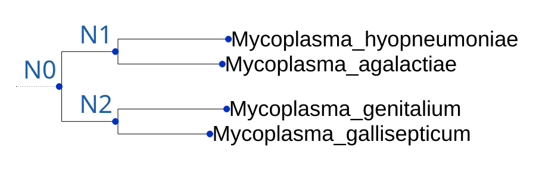
SpeciesTree_rooted_node_labels.txt).Do a common-sense check that the tree agrees with what is known about the species, so that you are not rewriting the history of life on Earth. Here, M. genitalium and M. gallisepticum are sister species, as are M. hyopneumoniae and M. agalactiae, as expected. SpeciesTree_rooted_node_labels.txt is the same tree with its internal nodes named N0 (the root), N1, N2 …; the other results files use these names, so keep this tree at hand.
If the tree is wrong, the orthogroups are not affected, but the gene duplication events, the hierarchical orthogroups, and the orthologs and paralogs within each orthogroup may be. The most common cause is a wrong root. You can rerun the last stages of OrthoFinder with a corrected tree, which is quick because the sequence searches and gene trees are reused (see 5.1):
orthofinder -fgt ExampleData/OrthoFinder/Results_Oct21/ -s corrected_species_tree.txtThe tree given with -s must be rooted and in Newick format, with the species named as in the results (e.g. Mycoplasma_agalactiae, or Mycoplasma agalactiae); branch lengths are optional:
((Mycoplasma_genitalium,Mycoplasma_gallisepticum),(Mycoplasma_hyopneumoniae,Mycoplasma_agalactiae));Now that we are happy with the run, we can start diving into the results. We will follow one gene through them: the gene gi|144227417|gb|AAZ44095.2| of M. hyopneumoniae.
First, we find the orthologs of our gene in M. agalactiae. The orthologs of each species are in the directory Orthologs/, in one compressed file per species, Orthologs/<species>.tsv.gz. Each row gives, for one orthogroup and one other species, a set of genes of this species and their orthologs in the other species. The columns are:
| Orthogroup | Species | Mycoplasma_hyopneumoniae | Orthologs |
|---|---|---|---|
| the orthogroup | the other species | genes of this species | their orthologs in the other species |
Search the file of M. hyopneumoniae for our gene, and keep the row for M. agalactiae:
zgrep "AAZ44095.2" Orthologs/Mycoplasma_hyopneumoniae.tsv.gz | grep Mycoplasma_agalactiaeOG0000035 Mycoplasma_agalactiae gi|144227417|gb|AAZ44095.2| gi|290752267|emb|CBH40238.1|, gi|290752987|emb|CBH40963.1|The gene is in orthogroup OG0000035, and it has two orthologs in M. agalactiae: gi|290752267|emb|CBH40238.1| and gi|290752987|emb|CBH40963.1|.
If you prefer a file for each pair of species, as written by OrthoFinder before v3.2, run OrthoFinder with -pof, or write them afterwards from the results with the split_ortholog_files tool:
split_ortholog_files ExampleData/OrthoFinder/Results_Oct21/
# only some of the files, e.g. M. hyopneumoniae against M. agalactiae:
split_ortholog_files ExampleData/OrthoFinder/Results_Oct21/ --species Mycoplasma_hyopneumoniae --partners Mycoplasma_agalactiaeThis writes Orthologs/Orthologs_Mycoplasma_hyopneumoniae/Mycoplasma_hyopneumoniae__v__Mycoplasma_agalactiae.tsv and the other pairs: tables with three columns, Orthogroup, Mycoplasma_hyopneumoniae and Mycoplasma_agalactiae. With many species there are n × (n − 1) such files (almost a million for 1,000 species), which is why they are no longer written by default.
The numbers of orthologs between each pair of species are in Comparative_Genomics_Statistics/OrthologsStats_*.tsv: for example, M. hyopneumoniae and M. agalactiae have 357 one-to-one orthologs (OrthologsStats_one-to-one.tsv).
Next, we look at the gene tree to see how these orthologs arose. OrthoFinder infers the orthologs from the resolved gene trees: each gene tree is rooted and reconciled with the species tree, using a hybrid species-overlap / duplication-loss-coalescence model to find the most parsimonious interpretation of the tree (see the OrthoFinder 2 paper). The resolved trees of all orthogroups are in one file, Resolved_Gene_Trees/Resolved_Gene_Trees.txt, a line for each orthogroup with four or more genes (the minimum for a tree):
OG0000035: ((Mycoplasma_gallisepticum_gi|31541051|gb|AAP56353.1|:0.94131,Mycoplasma_genitalium_gi|3845066|gb|AAC72490.1|:0.87787)n1:0.168517,(Mycoplasma_hyopneumoniae_gi|144227417|gb|AAZ44095.2|:0.90289,(Mycoplasma_agalactiae_gi|290752987|emb|CBH40963.1|:2.10194,Mycoplasma_agalactiae_gi|290752267|emb|CBH40238.1|:0.616644)n3:0.068516)n2:0.168517)n0;In the trees each gene is named with its species as a prefix, so that you can see the species in any tree viewer (-X leaves the prefix out). The internal nodes are named n0, n1 …. To view one tree, write it to its own file and open it in iTOL or Dendroscope:
grep "^OG0000035:" Resolved_Gene_Trees/Resolved_Gene_Trees.txt | cut -d " " -f 2 > OG0000035_tree.txt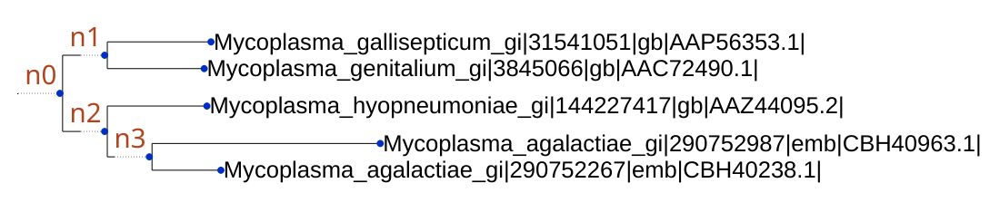
The gene tree shows that the two M. agalactiae genes arose from a gene duplication (node n3) in the lineage leading to M. agalactiae, after it split from M. hyopneumoniae. The result is a one-to-two orthology relationship: both M. agalactiae genes are equally related to the one M. hyopneumoniae gene. Orthology relationships are often not one-to-one, and it is important to know it: you don't want to spend months on experiments on "the ortholog" only to find out later that there are two.
The multiple sequence alignment the tree was inferred from is MultipleSequenceAlignments/OG0000035.fa, and the sequences of the genes are in Orthogroup_Sequences/OG0000035.fa.
Having the gene trees means that OrthoFinder can identify all the gene duplication events, and map each of them to the branch of the species tree where it occurred. The directory Gene_Duplication_Events/ has two files to explore them. First, open Gene_Duplication_Events/SpeciesTree_Gene_Duplications_0.5_Support.txt in iTOL (in iTOL, go to the "Advanced" tab of the Control Panel and choose "Display" next to "Node IDs" to see the node labels):
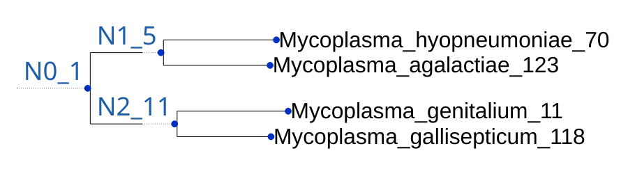
Each node is named with its label, an underscore, and the number of well-supported gene duplication events on the branch leading to it. A duplication is well supported if at least 50% of the species descended from it have kept both copies of the duplicated gene. For example, 5 duplications occurred in the common ancestor of M. hyopneumoniae and M. agalactiae (N1), and 123 on the branch leading to M. agalactiae; the numbers after the species names are the "terminal" duplications, those on the branch leading to that one species. The same numbers, with the numbers of all duplications, are in Comparative_Genomics_Statistics/Duplications_per_Species_Tree_Node.tsv.
All the duplication events are listed in Gene_Duplication_Events/Duplications.tsv, one per row. The one in our orthogroup is:
| Orthogroup | Species Tree Node | Gene Tree Node | Support | Type | Genes 1 | Genes 2 |
|---|---|---|---|---|---|---|
| OG0000035 | Mycoplasma_agalactiae | n3 | 1.0 | Terminal | Mycoplasma_agalactiae_gi|290752987|emb|CBH40963.1| | Mycoplasma_agalactiae_gi|290752267|emb|CBH40238.1| |
Each event is cross-referenced to the orthogroup (and its gene tree) in which it occurred, the node of the gene tree (n3 in Figure 1.2) and the node of the species tree (here the branch leading to M. agalactiae). It also lists the genes descended from each of the two copies. The events are also counted for each orthogroup in Comparative_Genomics_Statistics/Duplications_per_Orthogroup.tsv.
Often we are interested in comparisons across a group of species rather than between a pair of species. The generalisation of orthology to many species is the orthogroup: just as orthologs are the genes descended from a single gene in the last common ancestor of a pair of species, an orthogroup is the set of genes descended from a single gene in the last common ancestor of a group of species (section 3). Each gene tree is the tree of one orthogroup, and contains all the orthologs between the species in it. Some genes in an orthogroup are paralogs of each other, but taking any of them out would also remove orthologs.
So to compare the "equivalent" genes in a set of species, compare the genes of an orthogroup. The orthogroups are in Orthogroups/Orthogroups.tsv, a row for each orthogroup and a column for each species, largest orthogroups first. Our orthogroup is:
| Orthogroup | Mycoplasma_agalactiae | Mycoplasma_gallisepticum | Mycoplasma_genitalium | Mycoplasma_hyopneumoniae |
|---|---|---|---|---|
| OG0000035 | gi|290752267|emb|CBH40238.1|, gi|290752987|emb|CBH40963.1| | gi|31541051|gb|AAP56353.1| | gi|3845066|gb|AAC72490.1| | gi|144227417|gb|AAZ44095.2| |
Orthogroups.GeneCount.tsv has the number of genes of each species in each orthogroup (here 2, 1, 1, 1, total 5), which is what most analyses of gene family size need. Orthogroups_SingleCopyOrthologs.txt lists the orthogroups with exactly one gene from every species (250 in the example), often used for phylogenetics.
The orthogroups in Orthogroups.tsv are the hierarchical orthogroups of the root of the species tree (N0), inferred from the gene trees. They are more accurate than the orthogroups from the MCL clustering of the search results, which OrthoFinder computes first. The MCL orthogroups are written as Orthogroups/MCL_Orthogroups.tsv when a run is stopped after them (-og) or fails, and kept in a full run with -mog.
OrthoFinder also infers the orthogroups at each node of the species tree: the phylogenetic hierarchical orthogroups (HOGs). A HOG at node N1 is the set of genes descended from a single gene in the ancestor of the species below N1. The directory Phylogenetic_Hierarchical_Orthogroups/ has a file for each internal node: N1.tsv, N2.tsv, …. There is no N0.tsv: the HOGs of the root are the orthogroups in Orthogroups/Orthogroups.tsv. Compare the node names with Species_Tree/SpeciesTree_rooted_node_labels.txt (Figure 1.1) to see the species included.
Our orthogroup OG0000035 has a HOG at each of the two nodes:
| HOG | OG | Gene Tree Parent Clade | M. agalactiae | M. gallisepticum | M. genitalium | M. hyopneumoniae |
|---|---|---|---|---|---|---|
| N1.HOG0000036 | OG0000035 | n0 | …CBH40238.1|, …CBH40963.1| | …AAZ44095.2| | ||
| N2.HOG0000034 | OG0000035 | n0 | …AAP56353.1| | …AAC72490.1| |
The HOG at N1 has the genes of M. hyopneumoniae and M. agalactiae descended from the one gene in their common ancestor, and the HOG at N2 those of M. gallisepticum and M. genitalium. Each row also gives the orthogroup the HOG is part of, and the clade of the gene tree it was taken from. If there had been a duplication in the common ancestor of the species at N1, the orthogroup would have two HOGs at N1, one for each copy. Use the HOGs of a node to analyse a clade of species, for example to compare gene family sizes within the clade, and the create_hog_fastas tool to write their sequences (5.5).
For each orthogroup there is a FASTA file in Orthogroup_Sequences/ with the sequences of its genes, and the orthogroups with one gene from every species are also in Single_Copy_Ortholog_Sequences/.
We have now covered the main results files that most users need, but OrthoFinder writes much more: the putative xenologs, the phylogenetically misplaced genes, the statistics of orthologs between each pair of species, and so on. Section 4 describes every file.
The time and memory of a standard OrthoFinder run grow with the square of the number of species, because the proteome of every species is searched against that of every other species. OrthoFinder 3 provides a second workflow for large analyses (more than about 100 species), and for adding species to an existing analysis:
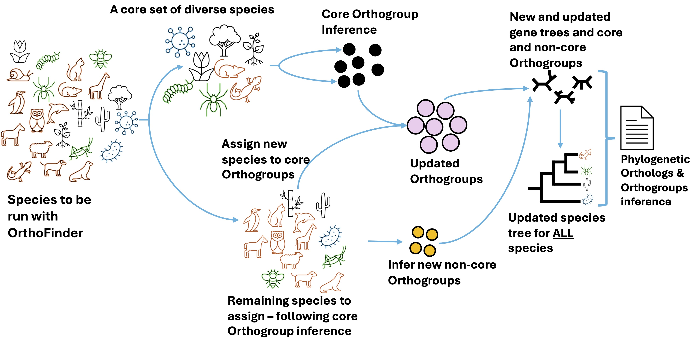
orthofinder [options] -f <core_dir>
orthofinder [options] --assign <additional_dir> --core <core_results_dir>The assign run then infers the gene trees of all the orthogroups, including the new species, the species tree, the gene duplications, the HOGs and the orthologs, as a standard run does, and writes the same results files.
This workflow also makes it quick to add new species to an earlier analysis. For example, a research group working on angiosperms could share the results of a core analysis of a diverse set of species, to which each member adds the species they study. The results of an assign run can in turn be the core of another one, to add species in several stages:
orthofinder --assign <new_species_2> --core <results_of_the_first_assign_run>The core analysis must have been run with multiple sequence alignments and gene trees (-M msa, the default). Species cannot be added to results run with -M dendroblast, which was the default in OrthoFinder 2.
The core species should capture the evolutionary diversity of all the species: the orthogroups of the core analysis are the ones the other species are assigned to, so a clade with no core species gets only the orthogroups shared with distant species. If we were analysing bees, moths and flies, the core should include species from all three, rather than, for example, only moths, which would give less accurate orthogroups and a longer run. We recommend about 64 core species. A good way to choose them is from a species tree of all the species (for example from the NCBI Taxonomy, or the literature): pick species spread evenly across the tree, preferring those with the best genome annotations.
The example data has two more Mycoplasma species in ExampleData/AdditionalSpecies/: M. arthritidis and M. haemocanis. Using the results of section 1 as the core, add them to the analysis:
orthofinder --assign ExampleData/AdditionalSpecies/ --core ExampleData/OrthoFinder/Results_Oct21/An assign run always creates a new results directory, next to the core results, and leaves the core results as they are: here ExampleData/OrthoFinder/Results_Oct21_1/. Its files are the same as those of a standard run, for all six species:
Summary:
OrthoFinder assigned 3778 genes (84.3% of total) to 692 orthogroups.Some differences from a standard run:
-ST chooses the program).-T fasttree_fastest) unless -A or -T is given.-op, or interrupted) is continued with -b on its own results directory (5.1).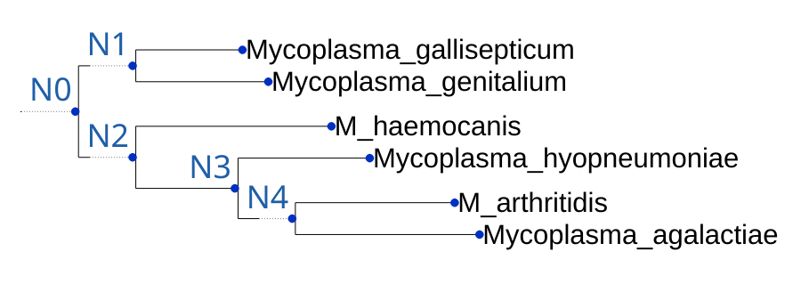
The new species are placed in the tree where expected: M. arthritidis with M. agalactiae, and M. haemocanis in the same clade as M. hyopneumoniae. Note that the node names are those of the new tree: N1 of the assign run is not N1 of the core run.
The orthogroups of the root of the species tree (Orthogroups.tsv) depend on how the root is placed, and the deepest splits of the tree are the hardest to infer. Including one or more outgroup species, more distantly related to all the others, makes the orthogroups of the species you are interested in more accurate. Use the HOGs of the node that is the common ancestor of your species of interest, in Phylogenetic_Hierarchical_Orthogroups/N<x>.tsv, rather than Orthogroups.tsv: look up the node in Species_Tree/SpeciesTree_rooted_node_labels.txt. Check that the species tree is rooted between the outgroup and the other species; if it is not, rerun with the correct tree (-fgt <results> -s <tree>, see 1.4).
First, we need to define the key terms:
Orthologs can be thought of as "equivalent genes" between two species, as they are descended from a single gene in the last common ancestor of those species. For example, the last common ancestor of humans and mice was a small mammal that lived alongside the dinosaurs. The genes present in that ancestor still exist, in some form, through their descendants in both humans and mice, and those genes are orthologs.
Orthologs describe relationships between pairs of species, but the idea extends to larger groups of species. Humans, mice and chickens share a common ancestor that lived a few hundred million years ago, before the dinosaurs had even emerged. The genes across all three species descended from a single gene in this ancestor form an orthogroup.
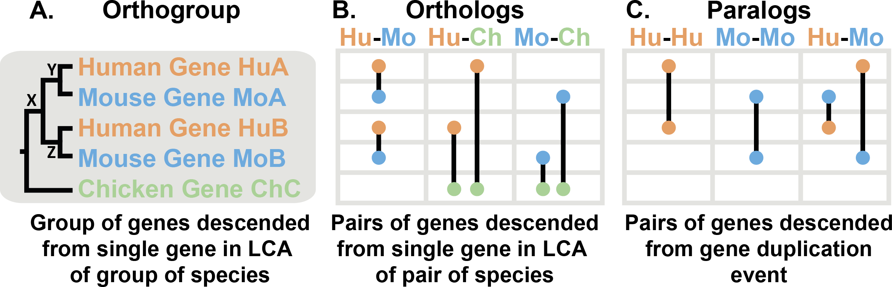
The tree in Figure 3.1A shows the evolutionary history of a gene. First, there was a speciation event where the chicken lineage diverged from the human-mouse ancestor. In the human-mouse ancestor, there was a gene duplication event at X, producing two copies of the gene in that ancestor, Y and Z. When human and mouse diverged, they each inherited gene Y (becoming HuA and MoA) and gene Z (HuB and MoB). In general, a gene duplication event can be identified because it creates two copies of a gene in a species (e.g. HuA and HuB).
The mouse gene MoB is more closely related to a human gene than it is to the other mouse gene MoA. This is because the duplication occurred in the ancestor, so each mouse gene is most closely related to its human ortholog (e.g. HuA and MoA), both descended from a single gene. By contrast, HuA and MoB diverged at the gene duplication event. They are not descended from a single gene in the common ancestor of human and mouse, so they are not orthologs: they are paralogs (Figure 3.1C). Paralogs diverged at a gene duplication event in a common ancestor. Such a duplication must have occurred further back in time than the speciation, so paralogs between a pair of species are always less closely related than orthologs between that pair. Paralogs can also be within a species (e.g. HuA and HuB).
The chicken gene diverged from the other genes when the lineage leading to chicken split from the lineage leading to human and mouse. Therefore the chicken gene ChC is an ortholog of both HuA and HuB in human, and of both MoA and MoB in mouse. Depending on what happened after the genes diverged, orthologs can be in one-to-one relationships (HuA – MoA), many-to-one (HuA and HuB – ChC) or many-to-many (no example in this tree, but there would be one after a duplication in chicken). OrthoFinder identifies all of these relationships: they are counted in Comparative_Genomics_Statistics/OrthologsStats_*.tsv.
There are several reasons why orthogroups are the right way to analyse orthology relationships between species.
All the genes in an orthogroup are descended from a single ancestral gene, so they all started out with the same sequence and function. Gene duplication and loss occur frequently in evolution, so restricting an analysis to one-to-one orthologs (the single-copy orthogroups) leaves out much of the data, and more of it with every species added: each species is another lineage in which a gene can be duplicated or lost. In the example data, the 250 single-copy orthogroups of the four species contain 37% of their genes; with the two species added in section 2.3, the 168 single-copy orthogroups of the six species contain 22%. With tens of species, or species with large genomes and many gene families, the single-copy orthogroups are a small fraction of the data. By analysing orthogroups you can analyse all of your data.
With orthogroups, you choose where to define the limits of the unit of comparison. For example, if you chose to analyse only human and mouse in Figure 3.1, there would be two orthogroups (the descendants of Y and of Z) rather than one. The hierarchical orthogroups of OrthoFinder give you these units for every clade of the species tree (3.3).
Orthology is defined by phylogeny. It cannot be defined by amino acid content, codon bias, GC content or other measures of sequence similarity; methods that use such scores to define orthologs without phylogeny can only provide guesses. The only way to be sure that an orthology assignment is correct is by a phylogenetic reconstruction of all the genes descended from a single gene in the last common ancestor of the species considered, and this set of genes is an orthogroup. Thus the only way to define orthology is by analysing orthogroups.
For a comprehensive overview of orthology and the OrthoFinder approach, you can watch David Emms' talk at the 2020 symposium on Phylogenomics and Comparative Genomics.
An orthogroup is defined for a group of species, and so depends on the species: it is the set of genes descended from one gene in their last common ancestor. OrthoFinder therefore infers the orthogroups for every clade of the species tree, the phylogenetic hierarchical orthogroups (HOGs). They are inferred from the rooted gene trees: the HOGs of a node N are the clades of each gene tree descended from a single gene in the ancestor at N.
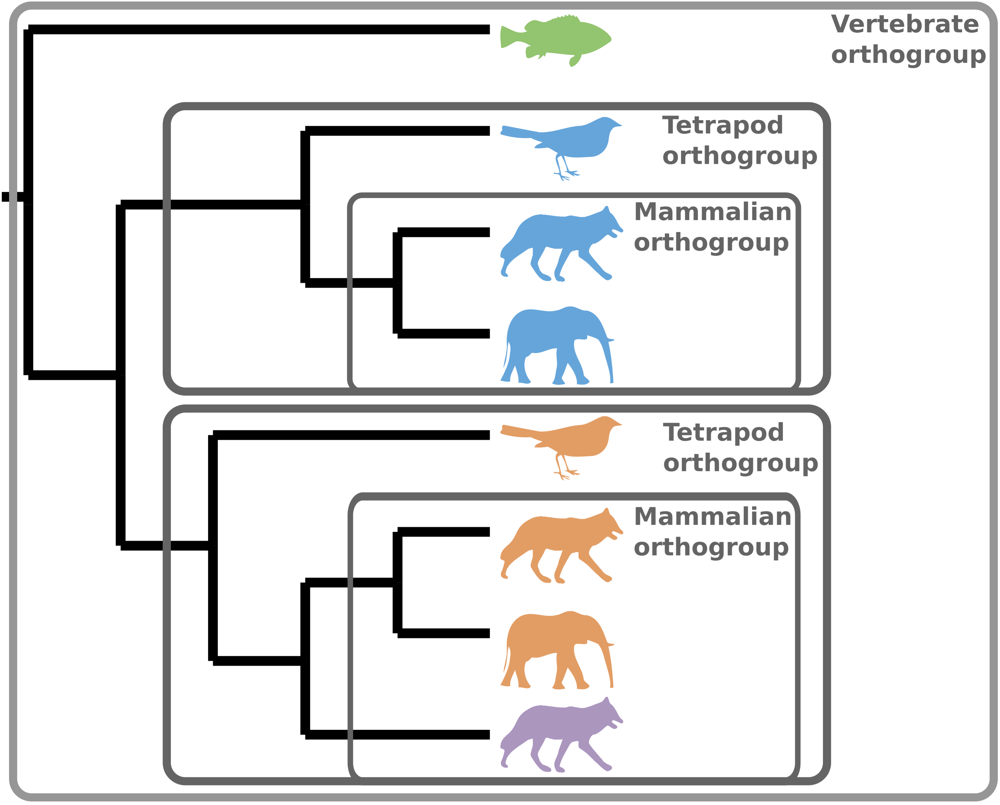
Inferring the orthogroups from the gene trees, rather than from sequence similarity alone, makes them more accurate. This is why, from OrthoFinder v3.1, Orthogroups/Orthogroups.tsv contains the HOGs of the root of the species tree (N0).
Definitions of some terms used in these files:
Gene and species names are the same in every results file. A name is made once from the FASTA header (or the file name, for a species), replacing each character that a results file cannot hold by _: spaces and tabs, : ; ( ) , [ ] = and quotes (and for a species also * ? < > | \ /). For example >sp|P12345|X_HUMAN Protein X gives sp|P12345|X_HUMAN_Protein_X, and Homo sapiens.fa the species Homo_sapiens. All results files are UTF-8 text, the tables are tab-separated with no quoted cells, and the trees are standard Newick.
Statistics_Overall.tsv, for each species.OrthologsStats_one-to-one.tsv: the number of one-to-one orthologs between each pair of species.OrthologsStats_many-to-many.tsv: entry (i, j) is the number of genes in species i in a many-to-many orthology relationship with genes in species j (due to gene duplication events in both lineages after the speciation).OrthologsStats_one-to-many.tsv: entry (i, j) is the number of genes in species i in a one-to-many orthology relationship with genes in species j.OrthologsStats_many-to-one.tsv: entry (i, j) is the number of genes in species i in a many-to-one orthology relationship with a gene in species j.OrthologsStats_Totals.tsv: entry (i, j) is the total number of genes in species i with orthologs in species j, of whatever multiplicity.Species_Tree/SpeciesTree_rooted_node_labels.txt).Resolved_Gene_Trees/Resolved_Gene_Trees.txt).Species_Tree/SpeciesTree_rooted.txt.The multiple sequence alignments of the orthogroups, OG0000000.fa etc., in FASTA format (with -M msa, the default). The concatenated alignment the species tree was inferred from is in the working directory (WorkingDirectory/Alignments_ids/SpeciesTreeAlignment.fa).
A FASTA file for each orthogroup, with the amino acid sequences of its genes.
OG0000000: gene gene …. It differs from Orthogroups.tsv in that it doesn't show the species of each gene; it is in the format of OrthoMCL, for programs that read it.Orthogroups.tsv..tsv, .txt, .GeneCount.tsv, _UnassignedGenes.tsv).
Written when a run stops after a stage (-og, -ogt, -ost) or fails after them, and kept in a full run with -mog. Their sequences can be written with the mcl_orthogroup_sequences tool.-pof, or written afterwards by split_ortholog_files: a file for each pair of species, listing the orthologs between them. Each row contains the gene(s) in one species that are orthologs of the gene(s) in the other species, cross-referenced to their orthogroup.OrthoFinder infers the HOGs, the orthogroups at each hierarchical level (each node of the species tree), by analysing the rooted gene trees.
N1.HOG0000036), the orthogroup it is part of, and the clade of the orthogroup's gene tree it was taken from. There is no N0.tsv: the HOGs of the root are Orthogroups/Orthogroups.tsv.Genes that appear to be out of place in their gene tree, and would otherwise lower the accuracy of the orthology analysis if not identified. They are often the result of contamination, or of a poorly predicted gene.
Xenologs are genes descended from a common ancestor where there has been horizontal gene transfer on the path to the genes in the extant species, rather than just speciation and duplication. OrthoFinder tries to identify xenologs, but we call them "putative", since many arise from contamination during sequencing. Each species has a file listing its genes and their putative xenologs in all the other species.
OG0000000: <Newick tree>. The genes are named with their species as a prefix (without it with -X), and the internal nodes are named n0, n1 … (as in Gene_Duplication_Events/Duplications.tsv).The same files as Orthogroup_Sequences, for the orthogroups with exactly one gene from each species.
--assign run, or with -ST astral-pro, from the gene trees with ASTRAL-Pro; or it is the tree given with -s.species_tree_alignment tool writes it, and the alignment, from results without it).The files OrthoFinder needs to continue or restart an analysis, or to add species to it. Most of them are named with internal IDs rather than gene and species names. Some that are useful:
0: Mycoplasma_agalactiae.faa, and 0_12 for the 13th gene of species 0), and the original FASTA headers.-b.-op (5.2).An OrthoFinder analysis can be stopped after any of its stages, and restarted from any of them. This is useful to check the orthogroups before inferring the trees, to run the sequence searches on a cluster, to rerun the later stages with other programs or a corrected species tree, or to continue a run that was interrupted (Ctrl-C, or a job time limit).
| Stop after | Option | Restart from | Option |
|---|---|---|---|
| preparing the files and search commands | -op | the sequence search results | -b <dir> |
| the MCL orthogroups | -og | the MCL orthogroups | -fg <dir> |
| the gene trees | -ogt | the gene trees | -fgt <dir> |
| the rooted species tree | -ost | the species tree | -fst <dir> |
At the end of a stopped run, OrthoFinder prints the command to continue it. For example, to look at the orthogroups before running the gene trees:
orthofinder -f ExampleData/ -og -n og_only
orthofinder -fg ExampleData/OrthoFinder/Results_og_only/-M, -A, -T, -ST, -I …, kept in WorkingDirectory/run_state.json), unless they are given again. For example orthofinder -fg <dir> -T iqtree3 infers the gene trees again with IQ-TREE.-fg also works on the results of a complete run, to redo the alignments and gene trees.-b, OrthoFinder runs only the sequence searches whose results are missing or incomplete, e.g. after -op or after a run that was interrupted during the searches.--assign run can be stopped and restarted in the same way, from its own results directory.The -op option prepares the files in the format OrthoFinder needs, and writes the sequence search commands to WorkingDirectory/blast_commands.txt, without running them:
orthofinder -f fasta_files_directory/ -opThis is useful to manage the searches yourself, for example to distribute them across the nodes of a cluster (there is one command for each pair of species, and each can run on its own). Once the searches are done, run the rest of the analysis with -b on the results directory:
orthofinder -b fasta_files_directory/OrthoFinder/Results_<date>/OrthoFinder checks which searches have finished, and runs any that are missing. It is possible to use pre-computed search results in the same way, provided they are in the format OrthoFinder expects (the tabular BLAST format, with the gene and species IDs of SequenceIDs.txt and SpeciesIDs.txt). If you run the searches yourself, we strongly recommend preparing the files with -op first.
| Option | Choice | Default |
|---|---|---|
-S sequence search | diamond, diamond_ultra_sens, blast, blastp, blastn, mmseqs. blast is BLAST+ for either kind of input: blastp for protein sequences, and blastn with -d (nucleotide sequences); blastp and blastn can also be given directly | diamond; blastn with -d |
-M gene tree method | msa (alignments and maximum-likelihood trees), dendroblast (distance trees from the search results, faster, less accurate; the OrthoFinder 2 default) | msa |
-A alignment (with -M msa) | famsa, mafft, muscle | famsa |
-T gene trees (with -M msa) | fasttree, fasttree_fastest, raxml, iqtree3 | fasttree |
-ST species tree (with -M msa) | astral-pro (from the gene trees) | the concatenated alignment of the single-copy orthogroups; ASTRAL-Pro with --assign |
-I MCL inflation | usually 1.2 to 5: larger values give smaller orthogroups | 1.2 |
-d | the input is nucleotide sequences: searched with BLAST+ blastn (by default, or with -S blast), or with -S mmseqs, whose commands then get the nucleotide search type; DIAMOND compares protein sequences only, so it cannot be used | protein |
The programs other than the defaults (BLAST+, MMseqs2, MUSCLE, RAxML, IQ-TREE) must be installed separately. More accurate tree programs, such as IQ-TREE, take much longer than FastTree.
-n <txt> | The name of the results directory, Results_<txt> |
-o <dir> | A results directory other than OrthoFinder/ in the input directory |
-s <file> | A rooted species tree to use, instead of inferring one |
-pof | Write the ortholog files for each pair of species (see 1.4) |
-mog | Keep the MCL orthogroups in a full run |
-X | Name the genes without their species prefix in the gene trees, alignments and Duplications.tsv |
-y | Split paralogous clades below the root of a HOG into separate HOGs |
-z | Don't trim the alignments (by default columns with ≥ 90% gaps are removed, keeping at least 500 columns) |
-t <int>, -a <int> | The threads for the sequence searches and for the rest of the analysis (1.3) |
These tools are installed with OrthoFinder (in tools/ of the source code; most need only Python 3, so they can also be run as python tools/<tool>.py without installing OrthoFinder). orthofinder-utils lists them, and <tool> -h describes each.
.zip/.tar.gz archives, and recognises Ensembl and NCBI headers; a second argument (last_dot, space, last_dot_before_first_space) tells it how to find the gene of each transcript for other headers..zip with protein.faa and genomic.gff), using the GFF to link proteins to genes (6.2).-pof; --species and --partners write only some of them, -t in parallel.N1, or all).Orthogroups.tsv, Orthogroups.txt or HOG files.0_12) to the gene names, or back.--root-age sets the age of the root.-ST.If you installed OrthoFinder with conda, you shouldn't need to install any of the programs it runs. The programs bundled with OrthoFinder (in the linux-intel release and the source code) are built for Linux on Intel/AMD (x86-64) processors only, including WSL2 on Windows; on other systems, such as macOS or computers with ARM processors (e.g. Apple silicon), install them yourself, for example with conda. Otherwise, the default analysis needs DIAMOND, MCL, FAMSA and FastTree (and ASTRAL-Pro for --assign).
| Program | Needed for | Installation |
|---|---|---|
| DIAMOND (2.1) | sequence search (default) | conda install -c bioconda diamond, or github.com/bbuchfink/diamond |
| MCL | orthogroups | conda install -c bioconda mcl, or github.com/micans/mcl |
| FAMSA | alignments (default) | conda install -c bioconda famsa, or github.com/refresh-bio/FAMSA |
| FastTree | gene and species trees (default) | conda install -c bioconda fasttree, or microbesonline.org/fasttree |
| ASTRAL-Pro | --assign, -ST astral-pro | github.com/chaoszhang/ASTER (bundled with OrthoFinder) |
| MAFFT | -A mafft | conda install -c bioconda mafft, or mafft.cbrc.jp |
| BLAST+, MMseqs2, MUSCLE, RAxML, IQ-TREE | -S, -A, -T alternatives | conda install -c bioconda blast mmseqs2 muscle raxml iqtree |
Let's imagine we want to perform a phylogenomic analysis across a set of species: dingo (Canis lupus dingo), great spotted kiwi (Apteryx haastii), kakapo (Strigops habroptila), platypus (Ornithorhynchus anatinus), tammar wallaby (Notamacropus eugenii) and common wombat (Vombatus ursinus).
OrthoFinder requires as input the amino acid sequences of all the protein-coding genes of each species. In this section we discuss how to get these files from three major websites:
A key consideration when getting input data is transcripts. The amino acid sequences downloaded for a genome often include several sequences for the same gene, because a gene can produce several transcripts, each of which may produce a different protein (see, for example, the transcripts of the human actin gene on Ensembl). Running OrthoFinder on these files would take much longer than necessary and could lower the accuracy, so we keep only the longest transcript of each gene with the tools provided with OrthoFinder (6.4).
First, go to the Ensembl list of species (or the new Ensembl website, which is updated more regularly). Search for the first species (Canis lupus dingo) and click on its link, which takes you to the Ensembl page of that species:
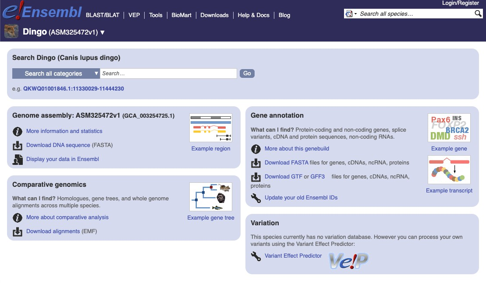
On the right, under "Gene annotation", click "Download FASTA" files for the genome. This takes you to a page with some folders:
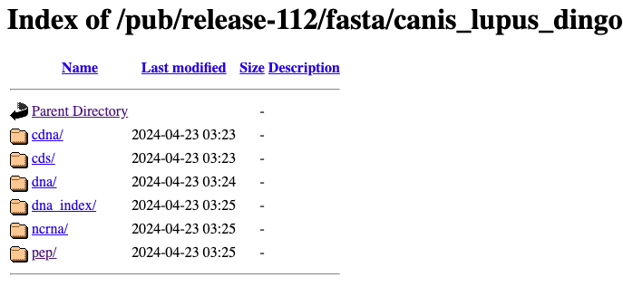
Click on the pep/ folder, and then on the file that ends in .pep.all.fa.gz:
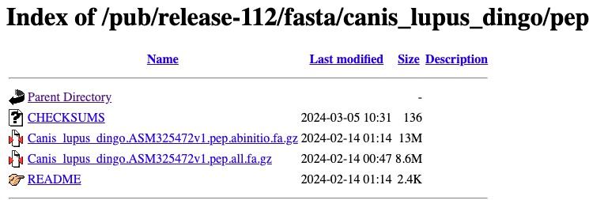
Repeat this for the other species, saving the files in one folder on your computer, for example Proteomes/. The files can also be downloaded on the command line: right-click the file, copy its link, and run
wget <the link you copied>The files are compressed (.gz) to save space; uncompress them with gunzip *.gz (or by double-clicking them). Ensembl headers name the gene of each transcript (gene:ENSCAFG…), which primary_transcript uses.
Go to www.ncbi.nlm.nih.gov and search for the first species:
To find the genome of the species, scroll down to the "Genomes" section and click on "Assembly / Genome":
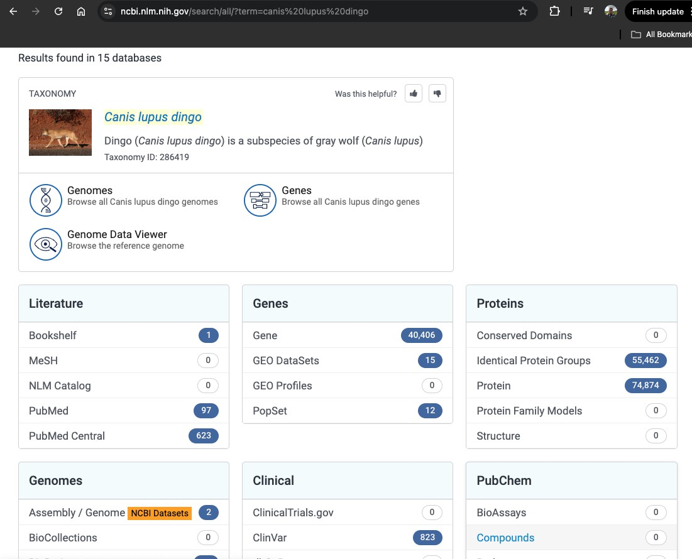
There may be several genomes listed. Click on the one with the green tick, the reference genome:
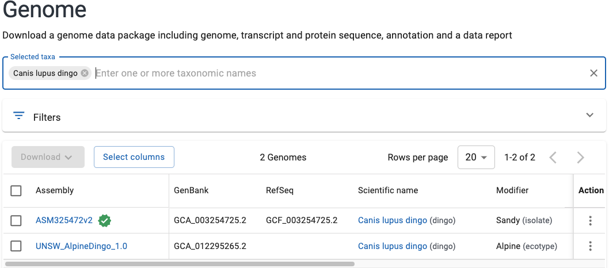
Click the blue "Download" button, and tick the boxes for the curated "RefSeq only" annotation and for the GFF and protein FASTA files. You can also give the download a useful name, such as the name of the species:
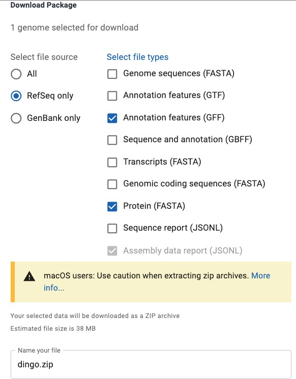
Click "Download", which downloads a zip file. Repeat this for each species. For some species in our list, like the kiwi, there is no RefSeq genome with protein sequences: for those, use Ensembl.
The NCBI protein files have a sequence for each transcript: for the dingo, about 75,000 sequences for about 20,000 genes. The ncbi_primary_transcript tool keeps the longest protein of each gene, using the GFF file in the zip to link each protein to its gene (6.4).
To download data in bulk, use the NCBI Datasets command-line tool, which downloads the same zip files, e.g.:
datasets download genome taxon "Ornithorhynchus anatinus" --reference --include protein,gff3 --filename Ornithorhynchus_anatinus.zipGo to the Phytozome data portal, and search for a species, such as Oryza sativa:
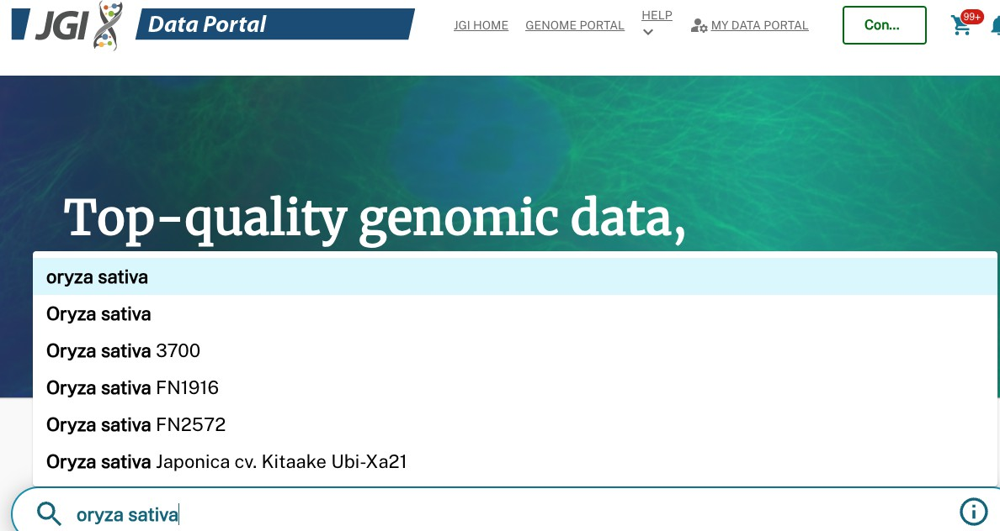
Find the genome you want to download and click on it. The file we want ends in primaryTranscriptOnly.fa.gz: Phytozome has already kept one transcript per gene, so these files are ready for OrthoFinder. Select the file and click "Add to Cart":
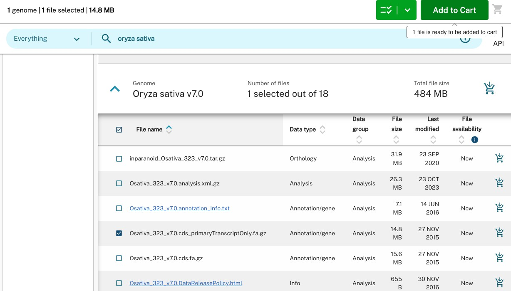
Repeat this for each species. When you are ready, click the shopping cart icon and press "Download" on the next page. You have to sign in, or register, to download the data. Place the files in one folder, and uncompress them (gunzip *.gz).
For files from Ensembl (or any files whose headers name the gene of each transcript), uncompress them and run primary_transcript on the folder (it also reads .zip and .tar.gz archives of FASTA files):
primary_transcript Proteomes/The files with one transcript per gene are written to Proteomes/primary_transcripts/. If the headers don't name the gene, but the transcript IDs are the gene ID with a suffix (e.g. AT1G01010.1, AT1G01010.2), give the rule as a second argument: primary_transcript Proteomes/ last_dot.
For the zip files from NCBI, run ncbi_primary_transcript on the folder with the zip files:
ncbi_primary_transcript NCBI_downloads/which writes a FASTA file for each genome to NCBI_downloads/primary_transcripts/, ready for OrthoFinder.
The name of each file is the name of the species in all the results, so shorten the file names: for example, rename Canis_lupus_dingo.<assembly>.pep.all.fa to Canis_lupus_dingo.fa. Put only the files of the species to analyse in the input folder, and check that each species has one file.
The data is now ready for OrthoFinder: run orthofinder -f Proteomes/primary_transcripts/ as in section 1.3.
When publishing work that uses OrthoFinder, please cite:
Emms D.M., Liu Y., Belcher L., Holmes J. & Kelly S. (2026). OrthoFinder: improved phylogenetic orthology inference with enhanced accuracy and scalability. Nature Methods 23, 1327–1333. doi:10.1038/s41592-026-03126-6
If you use the species tree in your work, please also cite:
Emms D.M. & Kelly S. (2017). STRIDE: Species Tree Root Inference from Gene Duplication Events. Molecular Biology and Evolution 34(12), 3267–3278. doi:10.1093/molbev/msx259
Emms D.M. & Kelly S. (2018). STAG: Species Tree Inference from All Genes. bioRxiv. doi:10.1101/267914
The methods introduced in earlier versions of OrthoFinder are described in:
OrthoFinder also uses DIAMOND, MCL, FAMSA, FastTree and (for --assign) ASTRAL-Pro: please cite the programs you use, which are listed in Citation.txt in the results directory.